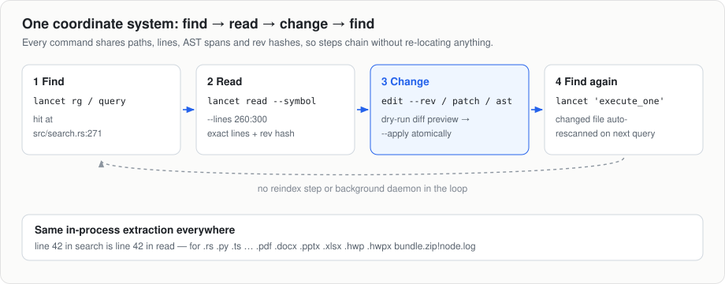

Safe Editing, Multi-Hunk CAS, Patching & Local Rename
Zero line drift across multi-hunk edits, zero silent overwrites across concurrent agents, and scope-proven local renames.
Hand-written sed commands and unguarded whole-file overwrites fail silently when lines shift or multiple agents touch the same file. Lancet treats every edit as an atomic, syntax-checked compare-and-swap (CAS) on shared coordinates.

rev hash consumed directly by edit and rename.Single-Hunk Edits (--lines, --symbol, --find)#
Pick exactly one target (--lines, --symbol, or --find) and exactly one operation (--with, --with-file, --delete, --insert-before, or --insert-after). By default, lancet edit prints a dry-run unified diff without modifying disk; add --apply to commit.
# Edit exact lines read earlier (pass --rev for CAS)
lancet edit src/net.rs --lines 12:15 --with ' timeout_ms: 5000,' --rev e70d5a898f122a62 --apply
# Replace an entire symbol (NOTE: includes doc comments & attributes above it!)
lancet edit src/net.rs --symbol retry_limit --with-file new_fn.rs --rev <REV> --apply
# Unique exact-text replacement (matches LF and CRLF; add --all for every match)
lancet edit src/net.rs --find 'let retries = 3;' --with 'let retries = 5;' --rev <REV> --applyedit --symbol spans the exact range that read --symbol displays — including leading /// doc comments and #[attr] attributes. Include them in your replacement if you intend to keep them.
Atomic Multi-Hunk Edits (--edits)#
When making multiple changes in one file, never chain separate line-numbered calls blindly — put all hunks into one --edits JSON array (from a file or - for stdin). Every hunk uses the original file's line numbers; Lancet resolves all spans first, rejects overlaps, and commits all-or-nothing:
lancet edit src/net.rs --rev e70d5a898f122a62 --apply --edits - <<'JSON'
[
{"lines": "10:12", "with": "const RETRIES: u32 = 5;"},
{"symbol": "legacy_helper", "delete": true},
{"find": "old_metric(", "with": "new_metric(", "all": true},
{"lines": "40", "insert_after": " tracing::info!(\"updated\");"}
]
JSONMulti-Agent Concurrency & Conflict Recovery#

inode and rev before writing; stale revisions fail with conflict (exit 2) and 0 bytes changed.- Read & capture
rev: runlancet read file --jsonand saverev. - Apply with
--rev: if another writer commits first, your call returnsstatus: "conflict"(exit code2). - Chain or recover: on success, pass the returned
rev_afterto your next edit. Onconflict,lancet readthe new content, re-compute your change, and retry with the newrev. Never strip--revto force past a conflict.
- Syntax gate: edits, patches, and AST rewrites refuse any net increase in Tree-sitter syntax errors (so an already broken file can still be fixed incrementally). Pass
--allow-syntax-errorsonly when intentional. - File identity: symlinks write to their targets while preserving the symlink; multiply hard-linked files update in-place; permissions and owners are preserved.
Multi-File Unified Diffs (lancet patch)#
lancet patch applies git diff or diff -u patches atomically across files:
# Dry-run verification
lancet patch changes.diff
# Apply from stdin, stripping 1 path prefix (default: a/ and b/) from subdir
git diff | lancet patch --root subdir -p 1 --applyHandles renames (git diff -M), mode changes (chmod +x), and empty new/deleted files. Every hunk is matched exactly (relocated only if an exact match exists at a unique nearest offset — never fuzzy). Pre-verification runs across all files before any byte is written, with best-effort rollback on mid-apply write races. Binary diffs and copies are refused.
Scope-Proven Local Rename (lancet rename)#
lancet rename renames a local binding (variable, loop variable, closure parameter, or non-Python parameter) inside a single file across 6 languages: Rust, Python, JavaScript, TypeScript, TSX, and Go.
# Col is optional when OLD only resolves to one binding on that line
lancet rename src/search.rs:42 old_name new_name
lancet rename src/search.rs:42:9 old_name new_name --rev <REV> --applyLancet refuses rather than guesses whenever correctness cannot be proven locally: module/top-level or exported symbols, struct fields, methods, Python function parameters (callers can pass keyword arguments across files), macros, JSX tag names, Go composite-literal keys, dynamic scopes (eval/with/locals()/global/nonlocal), and any target name that causes shadowing or variable capture when scopes are re-resolved post-rename.
Comments inside the scope mentioning the old name are left untouched and counted in comment_mentions. For cross-file or top-level renames, locate candidates with lancet refs and update explicitly with lancet edit --edits or an LSP.